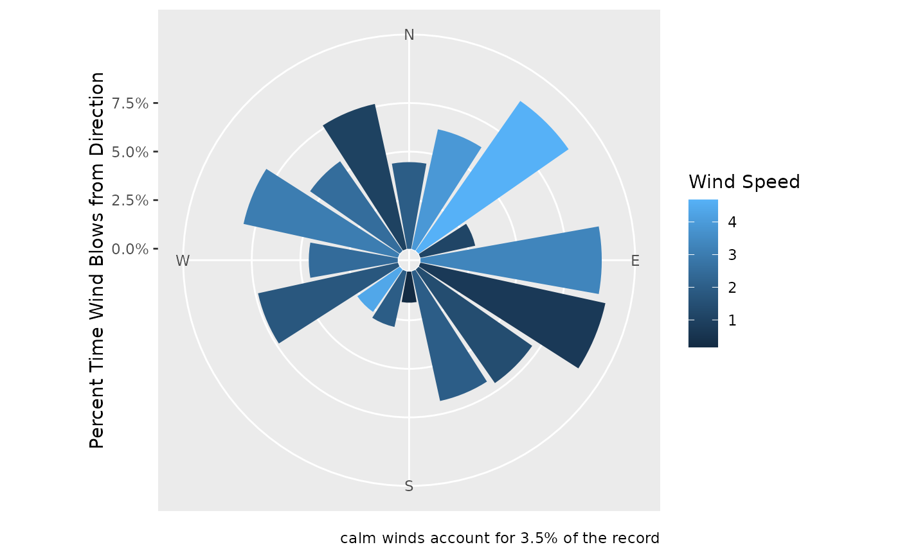
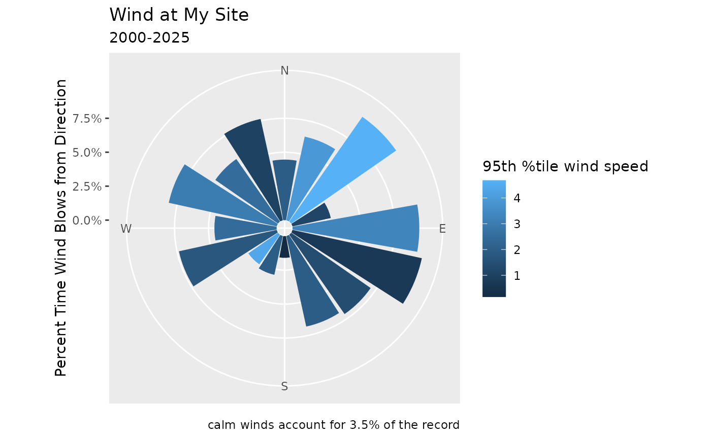
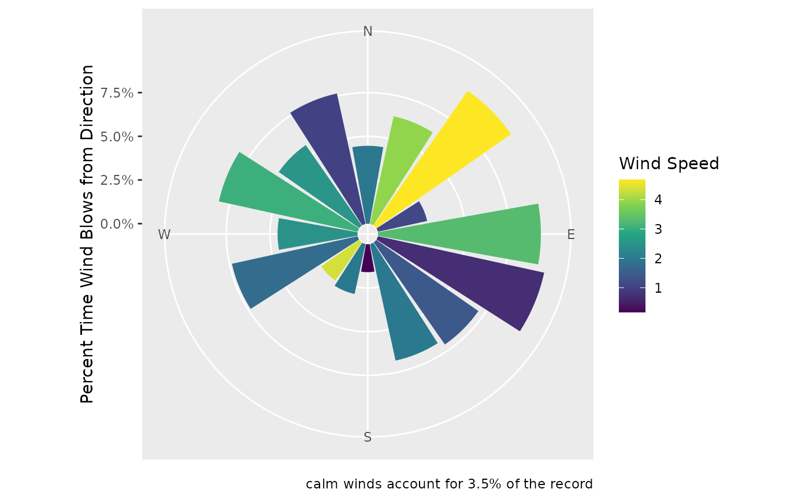

Generates a wind rose plot where the length of bars corresponds to the duration that wind is blowing from a direction and the color to the wind speed.
Details
The function filters out rows where direction is NA for the plot,
but still uses them to calculate and display the percent of calm winds in
the caption.
Wind direction labels are displayed as compass directions (N, E, S, W), and the plot is rendered in polar coordinates.
Examples
require(ggplot2)
#> Loading required package: ggplot2
set.seed(1) # for reproducibility
# Create random wind data
n_directions = 16
wind_data <- data.frame(
direction = c(NA, seq(0, 360, length.out = n_directions+1)[-(n_directions+1)]),
proportion = runif(n_directions + 1, min = 0.5, max = 5),
speed = runif(n_directions + 1, min = 0.1, max = 5)
) %>%
dplyr::mutate(proportion = proportion/sum(proportion)*100)
wind_rose_plot <- plot_wind_rose(wind_data)
# view the plot
wind_rose_plot

# can add your own labels with the
wind_rose_plot +
labs(
title = "Wind at My Site",
subtitle = "2000-2025",
fill = "95th %tile wind speed"
)

# Change the color scale
wind_rose_plot + scale_fill_continuous(type = 'viridis')
